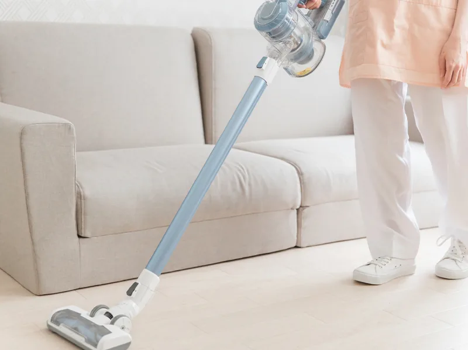
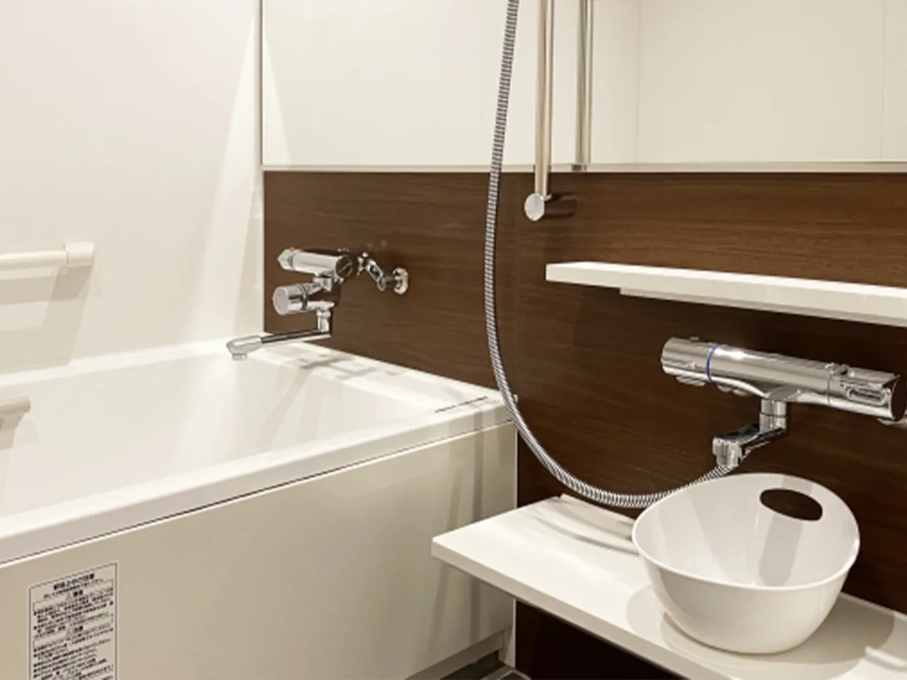

入浴や着替えに不安がある
安全に配慮しながら、必要な範囲で介助します。
HOME CARE
訪問介護 あいらんどは、ご自宅で安心して暮らし続けられるよう、ケアプランに基づく身体介護と生活援助を提供します。

SERVICE
支援内容は、ご本人の状態とケアプランに基づいて決まります。
DAILY LIVING SUPPORT
ご本人が日常生活を続けるために必要な家事を支援します。
同居家族のための家事や日常生活の範囲を超える作業など、介護保険の対象にならない内容があります。

PHYSICAL CARE
ご本人の身体に直接触れて行う介助や、自立を支えるための見守り・支援を行います。
実施できる内容は、心身の状態とケアプランにより異なります。
WHEN TO CONSULT
安全に配慮しながら、必要な範囲で介助します。
ケアプランに沿って、日常生活に必要な家事を支援します。
ケアマネジャーと連携し、必要な支援内容を検討します。
HOW TO START
担当ケアマネジャー、地域包括支援センター、または当事業所へご相談ください。
介護保険の申請状況や認定内容を確認します。
必要な支援内容を決め、重要事項をご説明したうえで契約します。
計画に沿って訪問し、状態に応じて関係者と支援内容を見直します。
申請先や相談先がわからない場合もお問い合わせください。市町村窓口や地域包括支援センターなど、状況に合う相談先をご案内します。
AREA & FEE
主な対応地域：本部町、今帰仁村、名護市周辺
利用料金は、介護保険の負担割合、サービス内容、利用時間などにより異なります。ケアプラン作成時にご説明します。
住所や訪問体制により対応可否が異なる場合があります。詳しくはお問い合わせください。
FAQ
介護保険の訪問介護は、原則としてご本人の日常生活を支えるためのサービスです。具体的な範囲はケアマネジャーと確認します。
はい。制度や申請先がわからない段階でもご相談いただけます。
ご本人の状態とケアプランにより異なります。現在困っていることを伺い、対応できる内容をご案内します。
負担割合、サービス内容、利用時間などにより異なります。契約前に個別にご説明します。
介護認定や利用方法がわからない段階でも構いません。